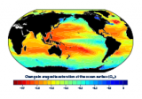

Ocean acidification has been called the “evil twin of global warming” and “the other CO2 problem”.
It's ongoing decrease in the pH of the Earth's oceans, caused by the uptake of carbon dioxide (CO2) from the atmosphere.
An estimated 30-40% of the carbon dioxide from human activity released into the atmosphere dissolves into oceans, rivers, and lakes, which also kills the ocean wild-life.
Please see a visual representation of 'Ocean Acidification'
Ocean acidification is an issue that impacts every organism in the ocean. Many people think that ocean acidification is caused by climate change, but the truth is that acidification is caused by the same thing that causes climate change—increasing levels of carbon dioxide. Though it's common for people to concentrate on the devastating effects of acidification on coral populations, the effect of acidification on the food chain, starting with plankton, has even greater implications.
Plankton build their calcium carbonate shells from available calcium and carbonate ions in the surrounding water. With an average pH of 8.1, ocean water is alkaline and can hold relatively high concentrations of carbonate. When increased amounts of carbon dioxide are absorbed by the ocean, the shift in equilibrium causes an increase in the concentration of H+ in the water (making the water more acidic) and a decrease in the concentration of CO32-. In response to these changes, plankton are migrating to locations with better conditions. Organisms that rely on plankton as a food source must follow along, or they will starve. Since plankton is at the bottom of the food chain in the ocean and almost every organism in the ocean relies on plankton in one way or another, the effects of this acidification are wide and far reaching. This is where a hands-on activity to demonstrate just how the addition of carbon dioxide decreases pH levels in water can come in especially useful when exploring these concepts with your students.
Global Ocean's Acidity Levels
Ways to reduce Ocean Acidification
- Reduce your carbon footprint
- Driving less
- Conserving water
- Buying sustainably made products
- Buying fewer items
- Use natural fertilizers and pesticides
- Support responsible companies
The best way to stop ocean acidification is to emit less carbon dioxide, so that the ocean does not absorb the excess. There are many small steps you can take to reduce your carbon footprint, including:
Because all water on land eventually leads to the ocean, harmful chemicals from fertilizers and pesticides make their way into the ocean, causing ocean acidification and chemical pollution. If you have a garden, make sure to use natural fertilizers, weed killers and pesticides, rather than releasing those chemicals into the ocean through runoff. For example, consider using an at-home vinegar-based weed killer, rather than toxic sprays like RoundUp. Not only is this better for the environment, but it is also cheaper!
Industry runoff, wastewater, and illegal dumping of chemical wastes can contribute to ocean acidification and pollute the ocean with toxic substances. Supporting responsible companies is a great way to contribute to the fight against ocean acidification.